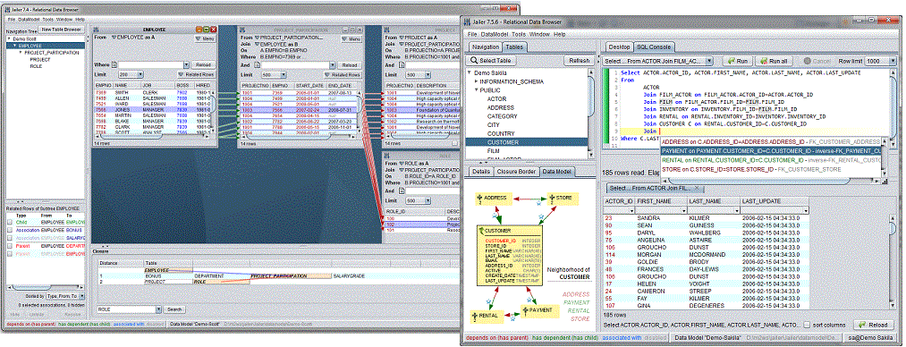
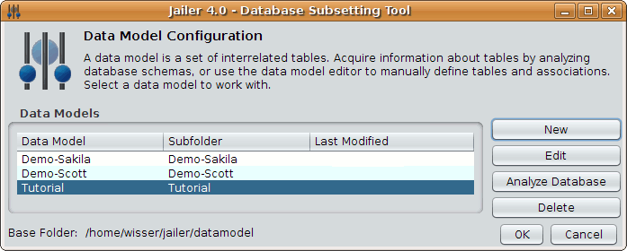
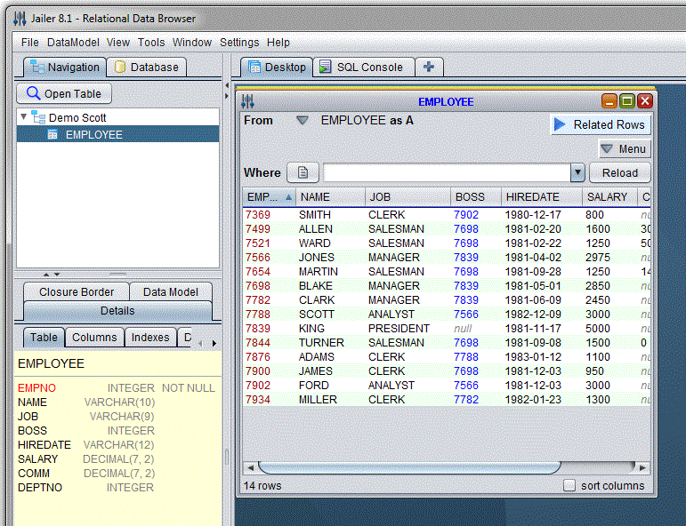
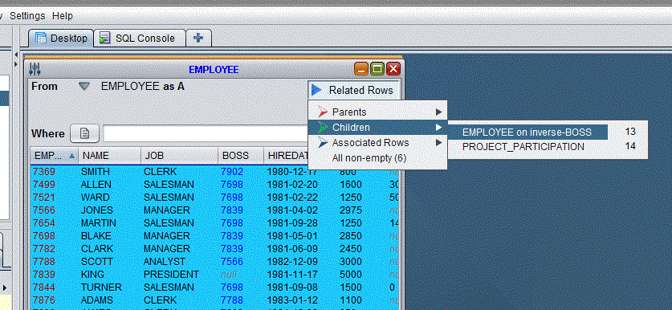
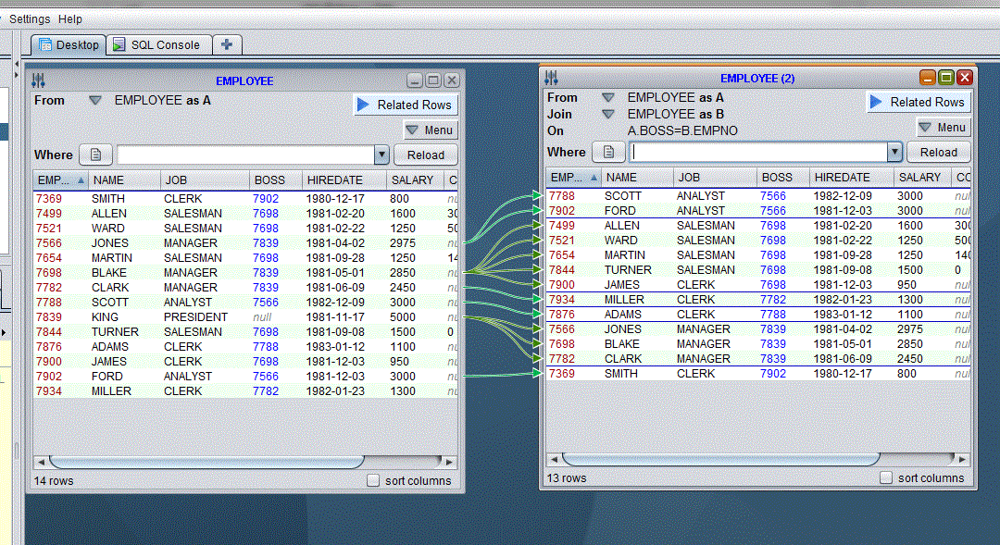
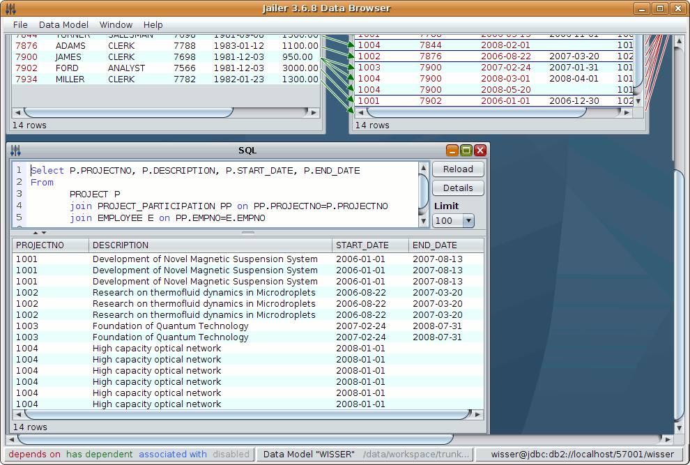
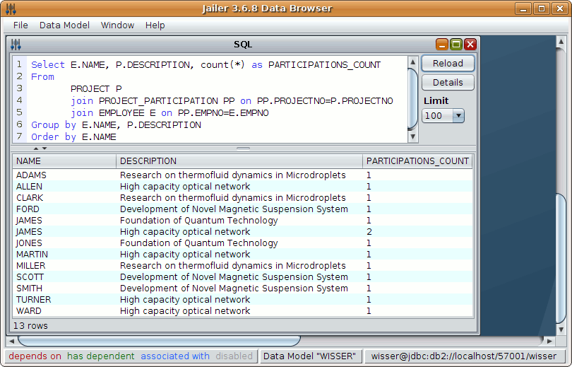

Relational Data Browsing
Navigate bidirectionally through the database by following foreign-key-based or user-defined relationships

1. Connect with the Database
Start the Data Browser (JailerDataBrowser.exe or jailerDataBrowser.bat on windows platform)
| $ sh jailerDataBrowser.sh |
and create a new data model. Press New and enter "Tutorial" as the name for the new model.

A data model holds information about the tables in the database and all associations between them.
Most of the information can be retrieved automatically by analyzing the database schema.
Click on Analyze Database.
You will be asked for the database connection information.

Create a new connection.

Select the DBMS you are using from the displayed list, and fill out the following form:

Finally click on Connect. Jailer finds seven tables and five associations:

Two associations are still missing:
- an employee is classified into a salary grade depending on his salary
- employees may receive bonuses
Add the definitions manually (Add-Button under Associations):


The data model is now complete.
3. Browse a Table
Select the menu item "Open Table" from "File" and choose "EMPLOYEE" as the table you want to browse:
A Table Browser appears showing the rows of table EMPLOYEE.

3. Browse related Rows
Select the "Children" item from the "Related Rows" drop-down menu and choose "EMPLOYEE on inverse-BOSS".

Another Table Browser appears showing the subordinates of each Employee (the inverse of the "BOSS" relationship)

3. Generate SQL-Query
Within each table browser, a SQL-Query can be generated which selects exactly the browser's content.
Essentially it's a join of all the tables in the navigation chain.
Close the second "EMPLOYEE" browser, navigate from EMPLOYEE to PROJECT_PARTICIPATION, and from there to PROJECT.
Choose "Query Builder" item from the "SQL/Query" menu in the "PROJECT" browser:

The Query Builder form lets you save the query into a file, copy it to the clipboard or even execute it.
Choose "Execute" to get a query-result browser:

Within this query-result browser, you can edit the query anyway you want.

|